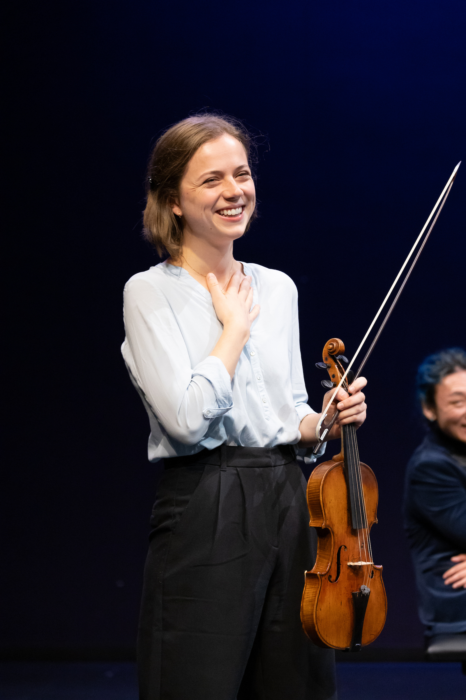

Annemarie Schubert
Violin
Annemarie Schubert (USA/Deutschland) began her violin studies at the Musikschule “Johann Sebastian Bach” in Leipzig, Germany. Marie holds a Dual Degree from the Oberlin College and Conservatory in Violin Performance and Neuroscience, and Masters degrees from the San Francisco Conservatory of Music and the Juilliard School, where she was honored with the Norman Benzaquen Award in recognition of talent, promise, creativity, and potential to make a significant impact in the performing arts.
As concertmaster and soloist, Marie has appeared in prominent halls throughout the United States, Europe, and Asia. Marie is the founder of the collective As The Crow Flies and a member of Quartet Novalis, which was selected as a 2026 Emerging Artist by Early Music America.
Upcoming Events
